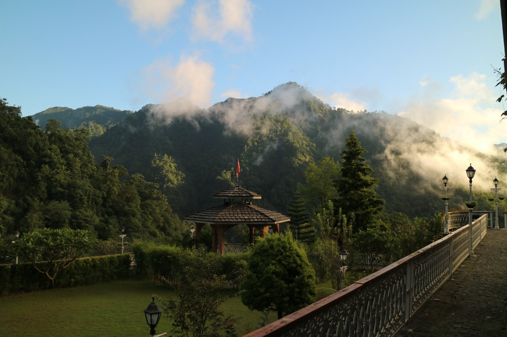
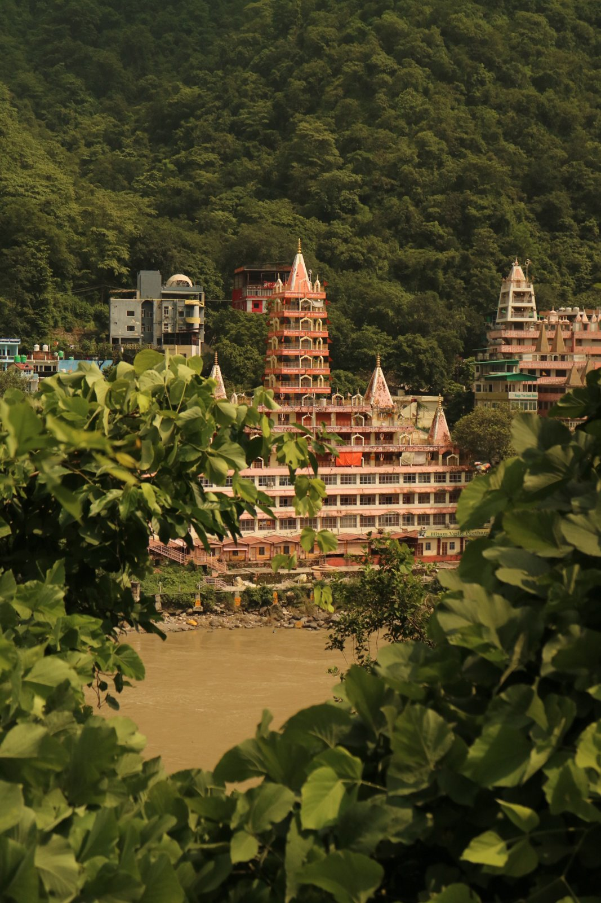
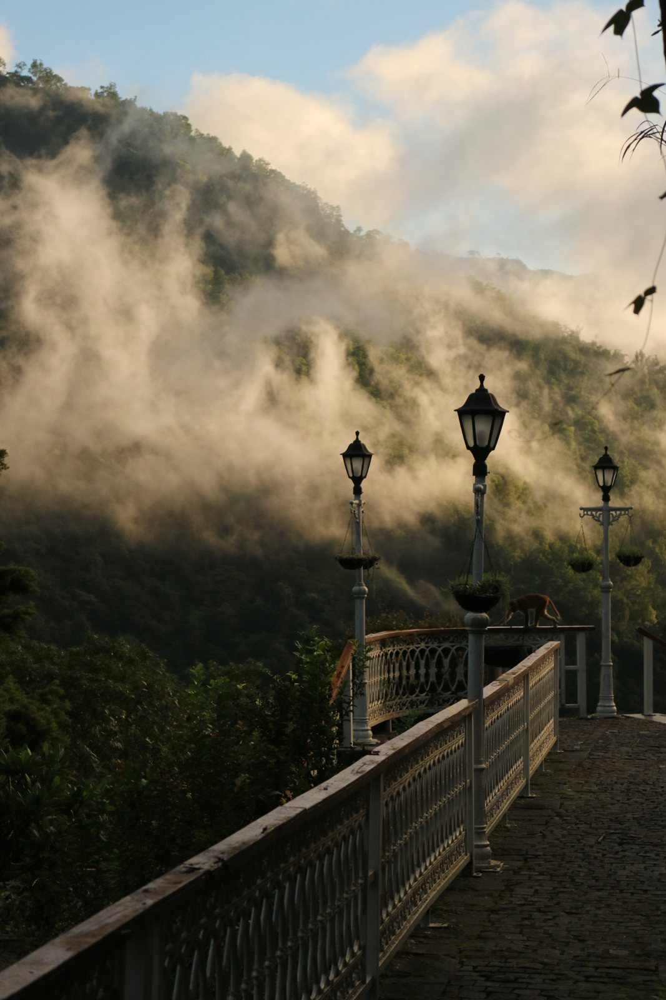
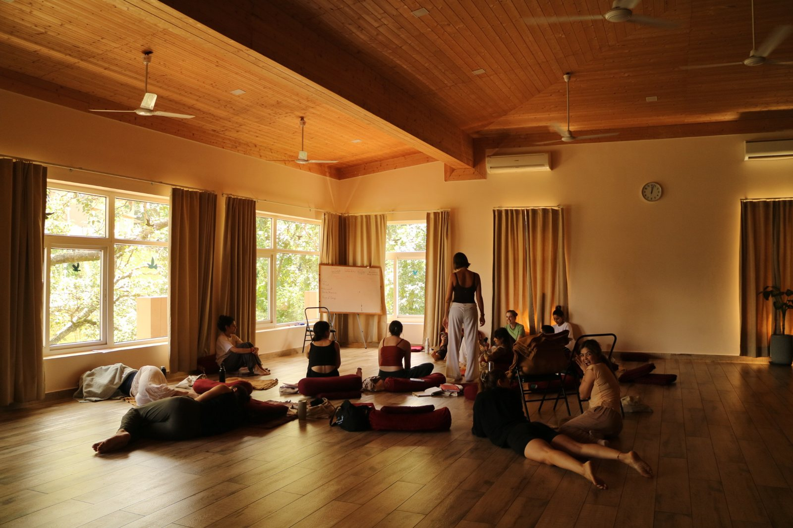
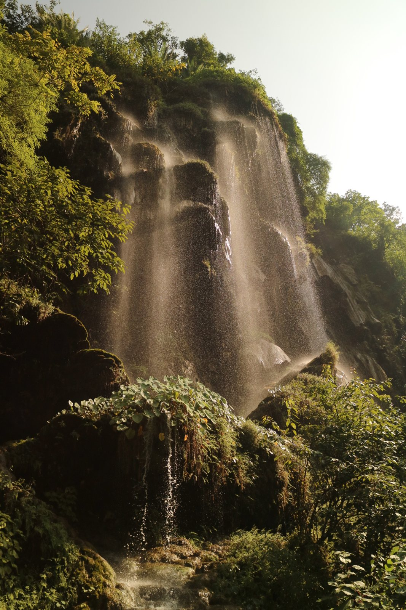
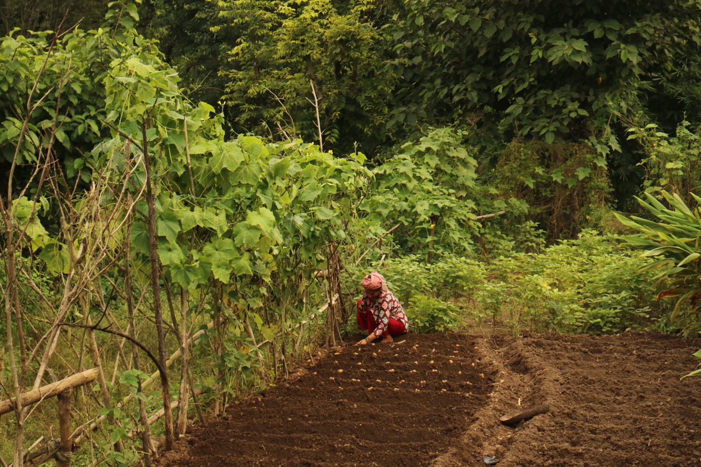
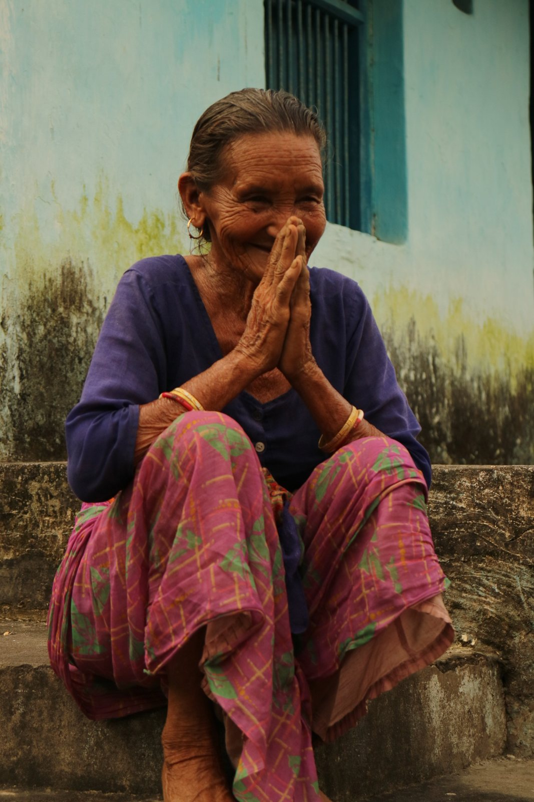
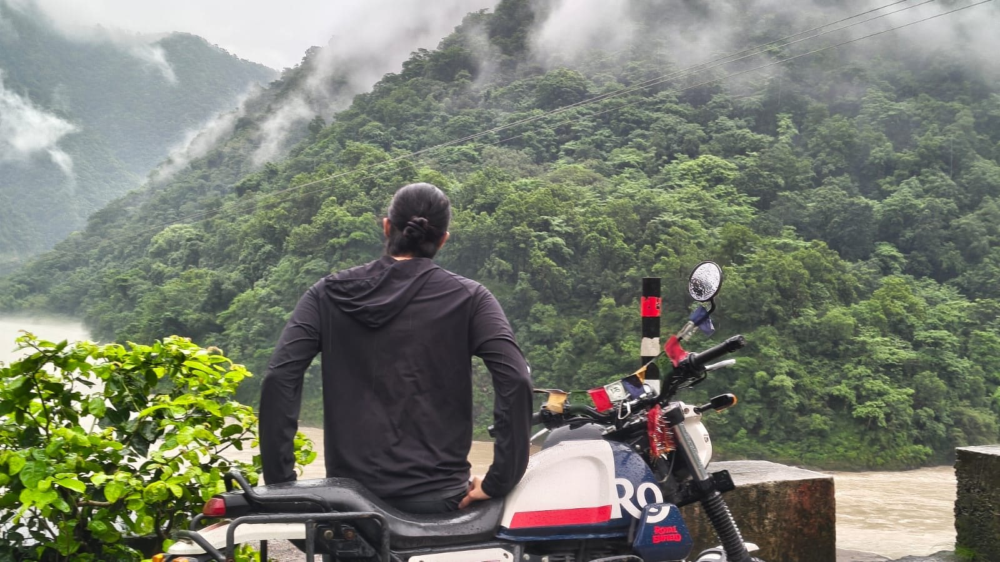

21 Days in Rishikesh
I went to do a yoga teacher training. I mostly remember the village, a guy who didn't talk for 105 days, and a motorbike.

Why I went
I'd recently finished up at my company Dippy AI and wrapped up my life in Toronto. I wanted a complete change of setting. After my first startup WOMBO I did a 10-day silent Vipassana retreat, so this time I wanted a totally different kind of reset. Three weeks of yoga in the Himalayas felt like the furthest thing from the life I'd been living.


Where it was
This is Rishikesh town. We were nowhere near it. The place was way up in the foothills, super secluded, and most mornings looked like this.

A total noob
Honestly, I was really noob at yoga. I'd done it every day for about a week before showing up, and two sessions a day had me pretty cooked within the first few days. So I stopped trying to be good at it and just treated it as 21 days of intro to yoga.

Sneaking out
Every chance I got, I'd sneak out to explore the hills and the village nearby. Pretty sure I snuck out more than anyone on the course and got a bit of a reputation for it. I did stay from start to finish though, for the record.

The village
The village was the best part. It's been there for centuries. One water source for everyone, fully vegetarian, and they grow most of what they eat. I made friends with a few of the villagers and they told me they barely need to spend money on anything. They seemed really happy, and the place was really clean.

"Hey son, be careful"
It was insane watching 85-year-old women farm and carry water home in the rain on slippery paths. I met her on one of those mornings. She had a pot of water on her head and stopped to tell me, "Hey son, be careful, you might slip." Pretty sure I should've been the one saying that to her.
Chaitanya
Some of the teachers and guys from the course. I spent a lot of time with Chaitanya, a former Vipassana teacher who'd just done 105 days in silence. I told him I'd been having a few sleepless nights since leaving Toronto and the company. He said, "Angad, that's normal. It's basically a breakup, your body reacts. It'd be weird if you didn't have them." Funny enough, once he said that, I started sleeping way better.

Day off
On our day off I met this guy at a café. Young dude, solo traveler, had seen a lot of the country. We both rented Royal Enfields, and I'd never ridden a motorbike before. We spent the whole day riding around the Himalayas in the rain. He was so generous and kind, and it was honestly one of the most freeing days of my life. We just had the best adventure.